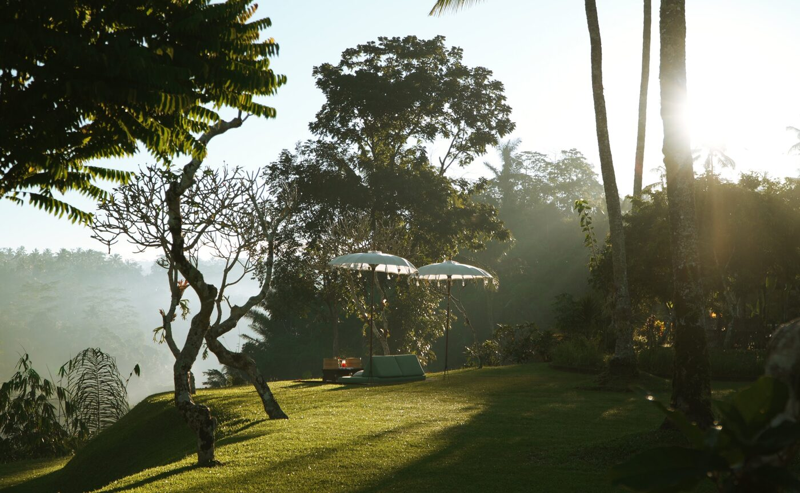

The next full moon rises on 26 September. Amandari, the resort that showed Bali what an infinity pool looked like, lays a table for it on the lip of the Ayung River Gorge.
Kedewatan is a village on the road north out of Ubud, an hour and a half from the airport. Peter Muller had been walking Bali's highland villages since 1970 with the idea of a hotel built like one of them. It took him almost twenty years to find a partner. Aman, fresh from opening Amanpuri on Phuket in 1988, took the idea at once. Muller drew the resort in eight days and it opened in 1989: freestanding pavilions under alang-alang thatch, coconut-wood pillars, stone gateways, hand-woven fans, temple sarongs in the wardrobe, and a swimming pool curved like a rice terrace and spilling over its edge, the first of its kind on the island.
The village never left. A hundred and twenty-nine steps below the resort a moss-covered stone tiger guards a Hindu shrine from the seventh century. Villagers carry umbul-umbul banners and banten offerings through the reception, which has a split roof open to the sky for the purpose. Children from Kedewatan learn dance and the bamboo rindik in the Lotus Pond Pavilion every day, and guests sit in. Children who learned here in the resort's first years now send their own.
Purnama
Purnama is the Indonesian word for full moon. Amandari marks every one with a dinner in the open, a menu built from Balinese dishes and whatever the season has brought to the kitchen garden and the local farms. The remaining dates for 2026 are 26 September, 25 October, 24 November and 23 December. Fish comes up daily from the Indian Ocean coast; the vegetables come from the resort's own beds.
The other tables run all year. Ngejot, the Balinese Hindu custom of sending food to the neighbours on a festival day, is served in The Restaurant at dinner: mansur rice from Payangan village, heritage pig from Tabanan. A private version with a Penyembrama welcome dance comes to the Dining Balé on a day's notice. Jamuan Makan Nusantara works through the archipelago, region by region. The Megibung feast, a shared meal in the manner of the last king of Karangasem, is served in the same balé, perched right on the edge of the gorge, with room for four. A newer evening pairs dinner with wayang kulit, the shadow-puppet theatre, led by a master dalang who plays every part.
Water at dawn
Tirta Empul is twenty minutes away, and the resort's signature morning begins there before the gates open to anyone else. The temple's name means the holy spring that rises from the ground, and purification rites in its pools date to 962. The Manukaya Let community has kept the springs for generations; one of the village storytellers leads the way, and a priest performs the Melukat blessing in the bathing pools while the water is still cold and the courtyards empty. Transfers, early access, the storyteller and the priest are all arranged by the resort.
The Ubud Valley Trails take the same hour on foot or by bicycle. The route climbs out of the gorge along ridgelines and village paths to a hilltop with the valley laid out below, where a rindik player is already seated and breakfast is set on the grass. The morning ends with a lesson in Balinese snacks, made by hand. Rafting on the Ayung is Class II, eleven kilometres under the gorge walls and past the waterfalls, with morning and early-afternoon departures. Blahkiuh market, twenty minutes off, opens at first light.

Morning on the Ubud Valley trails below Amandari · Courtesy of Aman
Bali has been copying Amandari for thirty-seven years. The moon over the gorge is the one thing it could not.
The Splendid EditThe pavilions
The pavilions open on three sides through sliding glass to walled courtyards, with coconut and teak inside and an outdoor soaking tub beyond. Garden and Valley Pavilions are 250 square metres, the Duplex 280, the Garden Pool Pavilion 265 with its own pool. The villas step up from there: the Asmara Pool Villa at 352 square metres over two levels, the Ayung Pool Villa at 265, the Ayung Pool Duplex at 420, the Duplex Pool Villa at 465. The One-Bedroom Villa runs to 450 square metres, the Two-Bedroom to 700 with an infinity pool of its own, and the Three-Bedroom to 688 with dedicated staff.
Every stay includes the airport transfers both ways, breakfast, a traditional afternoon tea, in-room refreshments, a daily half hour in the steam and sauna, the car into Ubud as far as Museum Puri Lukisan, and the dance and rindik class with the village children. Three nights earn a fourth. Discover Bali pairs four nights here with Amankila on the east coast. Until 22 December, guests can leave for a night by helicopter to Amanwana on Moyo Island, where the whale sharks gather in Saleh Bay at dawn, and be back on the gorge for dinner the next day.
Shanghai's shows open in October and the flight from Denpasar is under six hours. The Saturday before, with the moon full over the Ayung, is the night to be at the table.
History, accommodation, inclusions, dining calendar and experiences from aman.com (Amandari story, dining and experiences pages, updated July and August 2026). Purnama dates as published by the resort.
Photography courtesy of Aman — © Aman, Amandari